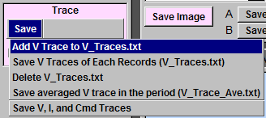
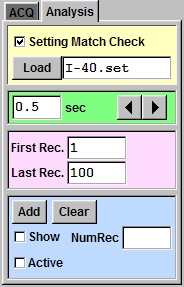
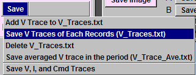
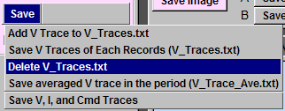
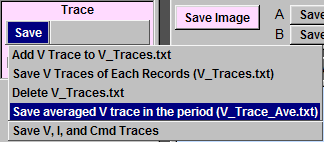
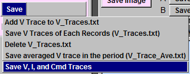
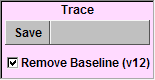
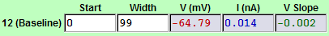

| To save the voltage data to a local file "V_Traces.txt", click "Save -> Add V Trace to V_Traces.txt". If the file does not exist, Ephic will creat a new one. If the "V_Traces.txt" already exists, the voltage data will be append to the end. You can open this file with Excel, Origin, or your favorite program to plot the trace. |  |
|
To save voltage data in all records, which match a setting file, in a defined
subset of records, to "V_Traces.txt", follow this example: (1) Load the setting file ("I-40.set" in this example). (2) Check "Setting Match Check". (3) Set the first record number ("1" in this example). (4) Set the last record number ("100" in this example). (5) Click "Save -> Save V Traces of Each Records (V_Traces.txt)". In this example, all setting matched voltage data from record number 1 to 100 will be saved to "V_Traces.txt". |
  |
| To delete local "V_Traces.txt", click "Save -> Delete V_Traces.txt". |  |
|
To average setting matched voltage data to local "V_Trace_Ave.txt",
do the following steps: (1) Load the setting file, set the first and the last record numbers, and check "Setting Match Check". (2) Click "Save -> Save averaged V trace in the period (V_Trace_Ave.txt)". If "V_Trace_Ave.txt" already exists, Ephic will replace it. |
 |
| To save the voltage, current, and command of the current record, click "Save -> Save V, I, and Cmd Traces" and follow the instructions. |  |
| When saving voltage traces, you can decide whether to remove the baseline or not. To remove baseline from the data, check "Remove Baseline (v12)". The baseline voltage is calculated according to measurement #12. |   |